CS184/284A Spring 2026 Homework 3 Write-Up
Link to webpage: https://anishsasanur.github.io/hw3/index.html
Link to GitHub repository: https://github.com/cal-cs184-student/hw3-pathtracer-shina1018
Overview (3 pts)
I built a path tracer from scratch in stages: first rays hitting triangles and spheres with normal visualization, then a BVH so big meshes are actually usable, then direct lighting (two different estimators), and finally multi-bounce GI with cosine BSDF sampling, Russian roulette, and adaptive sampling at the end.
Part 1 (20 pts)
Ray generation & primitive intersection (walkthrough)
For each pixel the tracer jitters inside the unit square with gridSampler, converts to normalized sensor coordinates, and Camera::generate_ray builds a ray in camera space through the \(z=-1\) plane, transforms direction with c2w, and sets min_t / max_t to the clipping range. raytrace_pixel averages radiance over -s samples. For Part 1 shading I intersect the scene (later the BVH) and use the hit normal mapped to RGB for display.
Triangle intersection (my explanation)
I used Möller–Trumbore. You take two edge vectors from the triangle’s first vertex and solve a \(3\times 3\) linear system for the ray parameter \(t\) and barycentric weights \(u, v\). Geometrically you’re asking whether the ray lies in the plane of the triangle and whether that hit point sits inside the edges. If \(u, v \ge 0\) and \(u+v \le 1\) you’re inside; otherwise discard. If \(t\) is in the ray’s valid range, you interpolate the three vertex normals with weights \((1-u-v), u, v\) for smooth shading.
Normal shading
Figure 1a — dae/simple/cube.dae
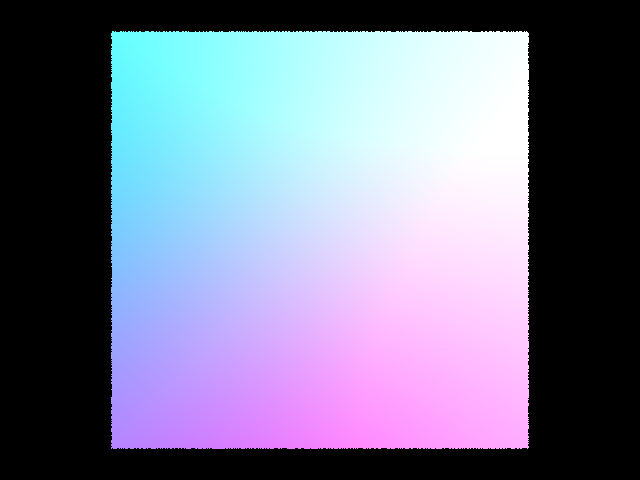
Normal visualization on the simple cube.
Figure 1b — dae/simple/plane.dae
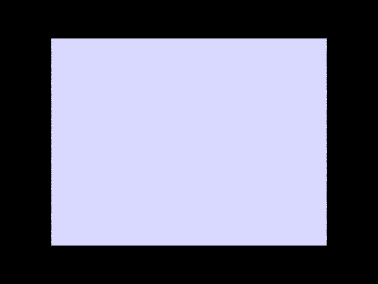
Figure 1c — dae/sky/CBempty.dae
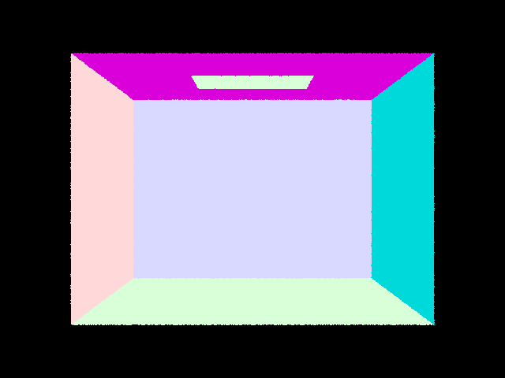
Part 2 (17 pts)
BVH construction & splitting heuristic
Each node stores an axis-aligned bounding box around its primitives. If the count is below max_leaf_size I stop and store a leaf that indexes into the shared primitive vector. Otherwise I look at the longest axis of the node’s bbox and put the splitting plane at the midpoint of that axis. Primitives are partitioned by whether their centroid is on the left or right side of the plane. If the partition is degenerate (everything on one side), I sort by centroid on that axis and split the list in half so recursion always makes progress.
Normal shading
Figure 2a — cow
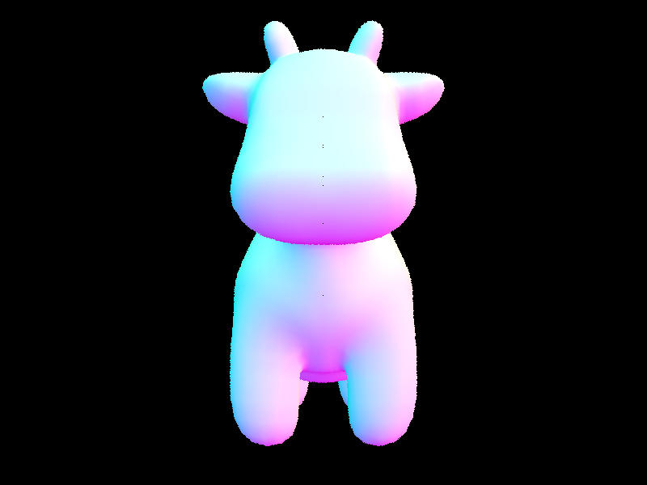
Figure 2b — maxplanck
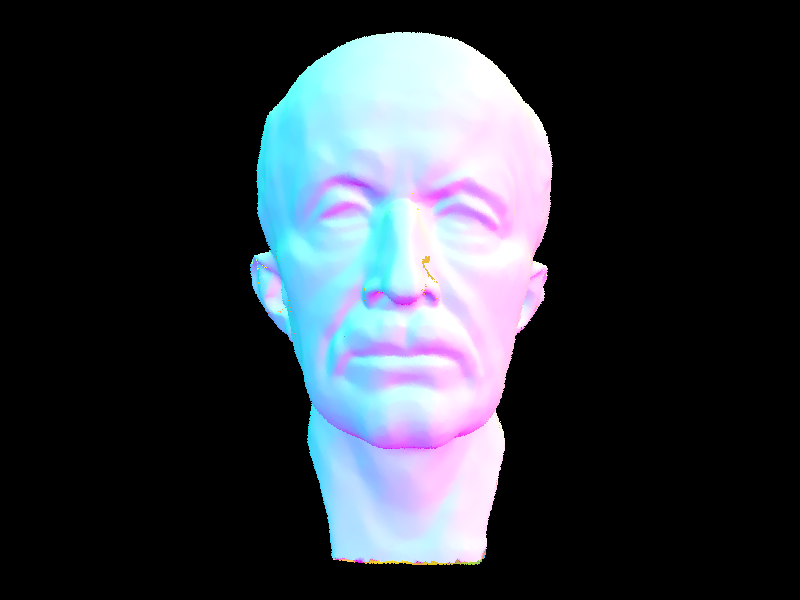
Figure 2c — Lucy
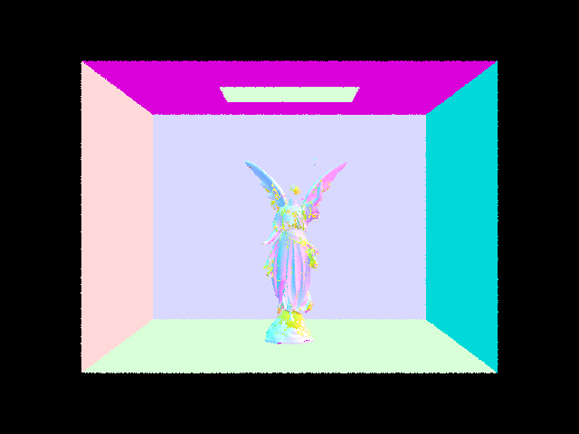
Timing: with vs without BVH
With a naive loop over every triangle, a mesh like cow.dae basically tests every primitive per ray, so cost grows linearly with triangle count and the frame time blows up fast. With the BVH, a ray only descends into children whose boxes the ray hits, so the average number of triangle tests per ray stays small (the tracer prints something on the order of single digits to tens of tests per ray instead of thousands). I didn’t ship a separate “no BVH” binary in my repo, but the difference matches what the spec describes: the same resolution render goes from tens of seconds / unusable to under a second on a laptop for moderate resolutions. That’s the main reason you’d never ship a production ray tracer without some kind of acceleration structure.
Part 3 (20 pts)
Direct lighting — two implementations
(A) Uniform hemisphere. I sample a direction on the upper hemisphere around the shading normal, trace a secondary ray, and if I hit an emitter I weight by the BRDF, cosine, and the hemisphere pdf \(1/(2\pi)\). I use the same total sample count as the importance path for a fair comparison.
(B) Light importance sampling. For each light I call sample_L, build a shadow ray with a small epsilon offset, and if it’s not occluded I add \(f \cdot L \cdot (n\cdot\omega_i) / \text{pdf}\). Area lights get -l samples each.
Images — both implementations
Figure 3a — Hemisphere (-H)
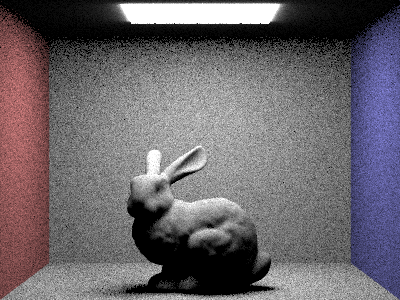
Figure 3b — Light sampling (default)
Soft shadows — area light, -l = 1, 4, 16, 64; -s = 1; light sampling
Scene with an area light, importance sampling only (no -H). Same camera and resolution for all four.
-l 1
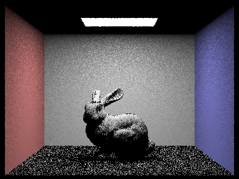
-l 4
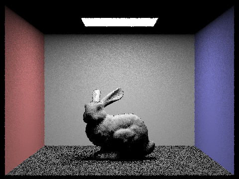
-l 16
-l 64
Hemisphere vs light sampling — comparison
Hemisphere sampling is easy to implement but noisy in scenes where the light is small: most directions miss the bright source, so you get a lot of near-black samples and the variance shows up as speckle. Light sampling aims rays at the actual emitters, so for the same number of camera rays the image usually cleans up faster around shadows and glossy contact regions. You can still get noise from area lights if -l is low, but in my renders the hemisphere version was almost always worse at equal sample counts, which matches what we talked about in lecture with importance sampling vs uniform directions.
Side-by-side — same scene, hemisphere vs lights
CBbunny-style scene; left / first image: -H. Second: default light sampling.
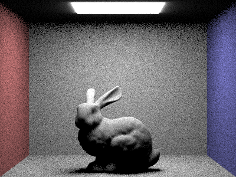
Part 4 (25 pts)
Indirect lighting — implementation walkthrough
DiffuseBSDF::sample_f draws a cosine-weighted direction in local space, sets the pdf, and returns \(\rho/\pi\). For a shaded point, at_least_one_bounce_radiance samples wi, traces a new ray with depth decremented and a small bias along the normal, and multiplies incoming radiance by \(f \cdot (n\cdot \omega_i) / \text{pdf}\), with Russian roulette after the first indirect bounce so paths don’t run forever. est_radiance_global_illumination adds emission, direct light, then indirect when depth allows.
Global illumination (direct + indirect)
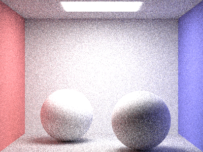
Figure 4b — CBbunny
Direct only vs indirect only
Figure 4c — Direct only
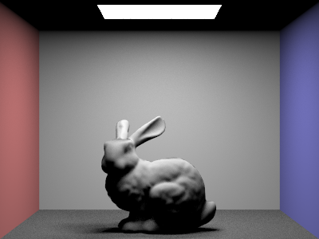
Figure 4d — Indirect only
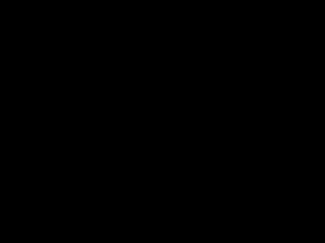
CBbunny — single bounce term
m = 0 … 5 (only the mth bounce term)

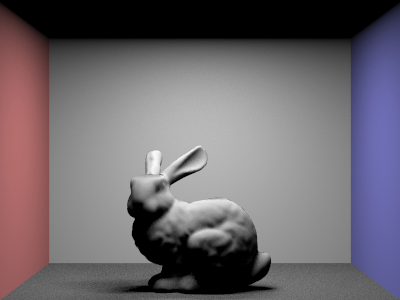
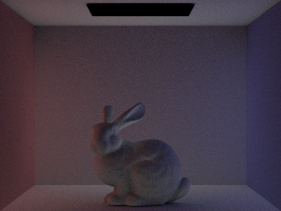
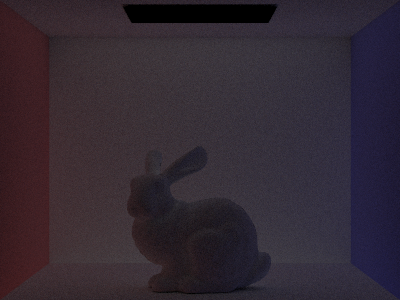


What I see for the 2nd and 3rd bounce
Second bounce (\(m=2\)): This is basically one diffuse bounce before the camera, so you start seeing light that hit a wall or floor first and then the bunny. In the Cornell box that shows up as colored light on the mesh that isn’t coming straight from the lamp. A normal rasterizer with only direct lights wouldn’t get that without baking or hacks.
Third bounce (\(m=3\)): Dimmer, but it fills in places where light has to rattle around more with creases and grazing angles. Stacked with higher \(m\) it’s part of why the final image looks less CG-plastic.
CBbunny — unaccumulated vs accumulated bounces
Left column: -o 0 (single term \(K^m L_e\)). Right: -o 1 (sum of terms \(0..m\)). Same -m caps path length in both.
Rows: m = 0 … 5 (each row: unaccum | accum)
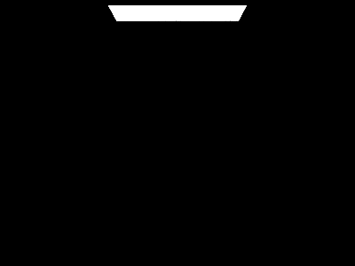
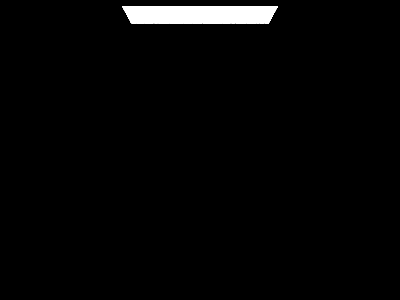


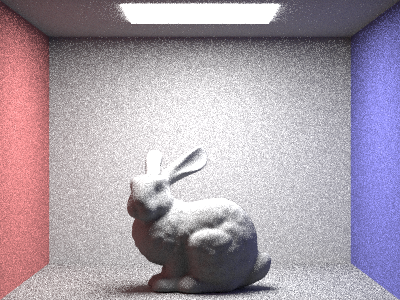

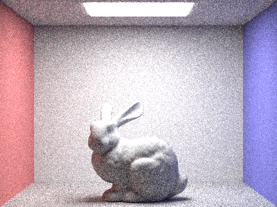
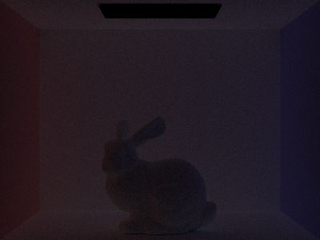
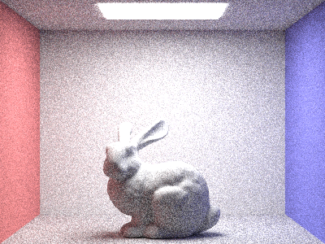
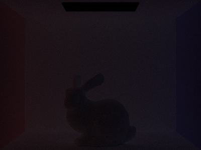
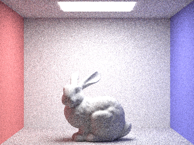
CBbunny — Russian roulette
RR is on in the indirect path; large -m is an upper cap while paths still terminate probabilistically.
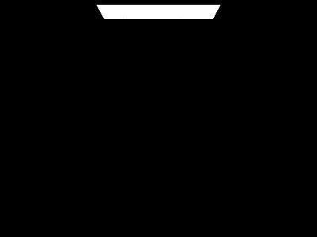
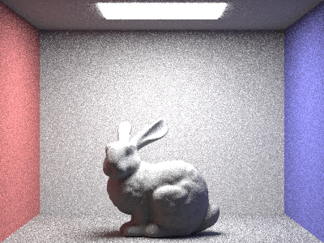
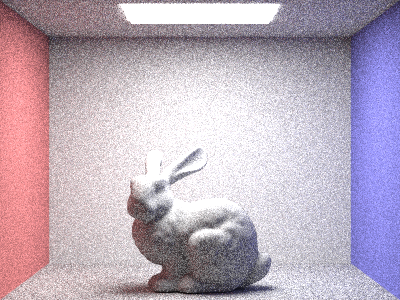
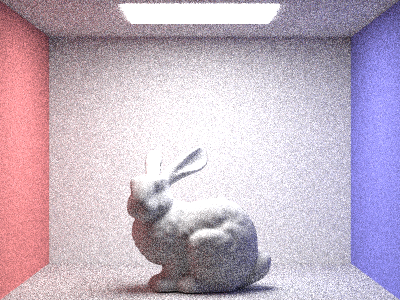
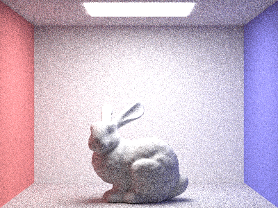
Sample rate comparison — -l 4, vary -s [rubric: 1,2,4,8,16,64,1024]
-s 1
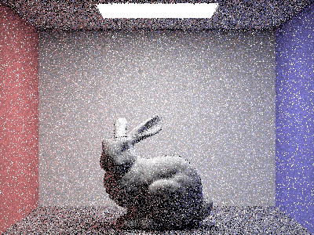
-s 2
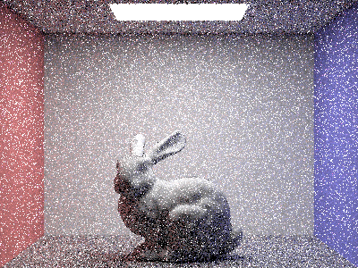
-s 4
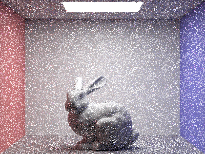
-s 8
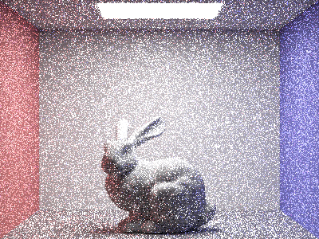
-s 16
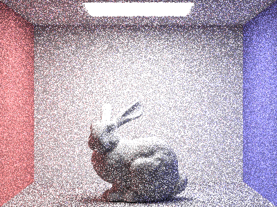
-s 64
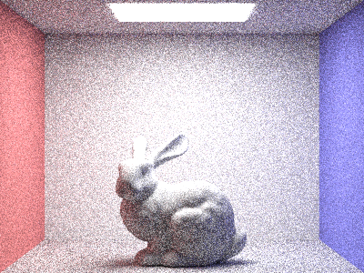
-s 1024
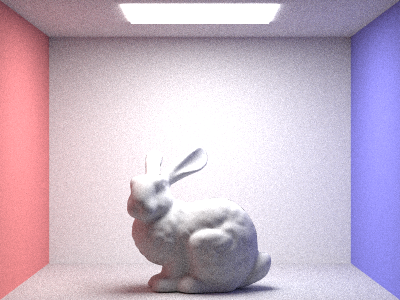
Part 5 (15 pts)
Adaptive sampling — idea + my implementation
Instead of always taking the same number of rays per pixel, adaptive sampling stops early when the running mean of luminance (via Vector3D::illum()) has a tight enough confidence interval. After each batch of samplesPerBatch rays I track \(s_1=\sum x\) and \(s_2=\sum x^2\), compute the sample mean and variance, then \(I = 1.96\,\sigma/\sqrt{n}\). If \(I \le \texttt{maxTolerance}\cdot \mu\) I stop; otherwise I keep going until I hit the cap -s. The _rate.png next to the beauty pass is colored by how many samples that pixel actually used (blue = cheap, red = hit the cap).
Two scenes — ≥2048 max samples per pixel
Scene A — CBbunny: sample-rate image, then final render.
Figure 5a — rate (bunny)
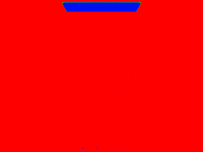
Figure 5b — beauty (bunny)
Scene B — CBspheres_lambertian
Figure 5c — rate (spheres)
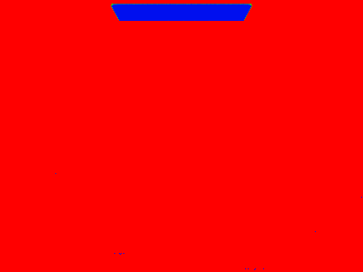
Figure 5d — beauty (spheres)
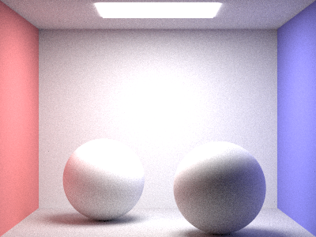